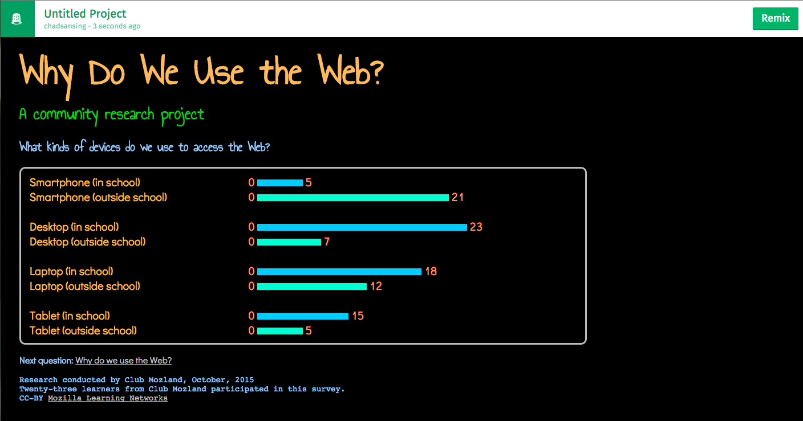
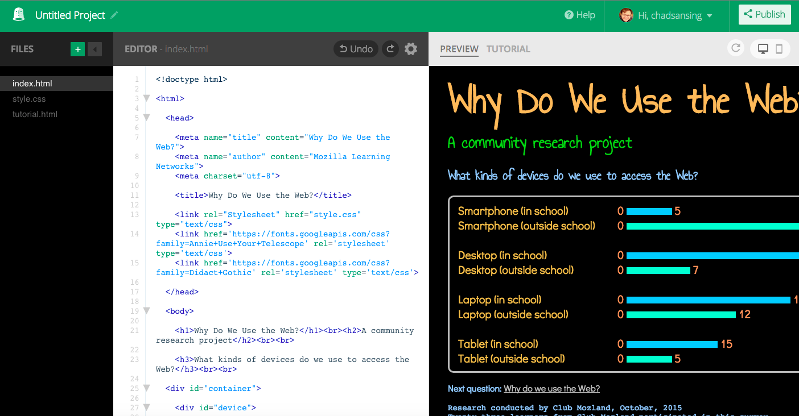

Reporting & Sharing Results in the Open
The next part of the activity is described as an online activity. However, your learners can create a series of posters instead of a series of webpages to share their findings and post their work inside your room if technology access or local norms prevent you from sharing work online.
Once students have collected their data, ask them to sit at their computers in order of their questions and to go to the Thimble project for today's activity. Post your shared document or hand-written ordered list of questions to help students find their seats.

The Thimble project is a webpage that shares survey results. Each student will use Thimble to remix the page and
- Change the question.
- Change the possible answers.
- Change the results.
- Change the link to the next question at the bottom of the page.
To make their changes the project, students should hit the green "Remix" button in the upper right-hand corner of the screen. That button will take them into the code for the project. Once students are in the code editing screen, they will see a "Tutorial" tab in the upper right-hand part of the screen. By cliking on that tab, students will be able to see a tuorial that will guide them through all the changes they need to make to the page.

Be sure to go over the tutorial - and how to access it - with your group and help students who experience difficulty reading and writing to remix the project. Students can certainly help one another, as well, to practice collaborating.
Point out to students that the tutorial will ask them to change the link to the next question on the bottom of each page. They should change the link and its text - the question it links to - so that it matches the question and the published URL, or Web address, of their neighbor to the right. The student with the last question should link back to the first question.
After students finish remixing their pages, they can publish them on Thimble and share them online to help other community members - like peers, teachers, administrators, club captains, and mentors - figure out how best to teach the Web in your community.
To publish a remix, you hit the "Publish" button in the upper right-hand corner of Thimble's code-editing screen. Students will need to share their published URLs, or Web addresses, with peers to their left so each page can link to the next in the research project.